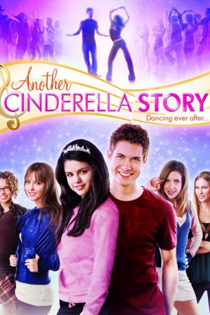
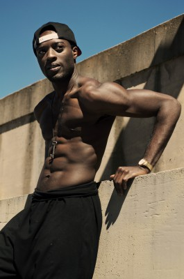

#7179 Another Cinderella Story
 
 IMDB-Wertung: 5.9 / 10
IMDB-Wertung: 5.9 / 10  Metascore: 0
Metascore: 0 
Musikalisch. Magisch. Wieder eine Aschenputtel-Geschichte nach dem märchenhaften Motto: Wenn sie nicht gestorben sind, dann tanzen sie noch heute. In dieser fröhlichen neuen Version spielt Selena Gomez das moderne Aschenputtel Mary, das statt der gläsernen Pantoffeln Tanzschuhe trägt. Drew Seeley ('High School Musical') spielt den Märchenprinzen Joey, der sich als Neuer an der Schule eine Freundin wünscht. Könnte Mary das passende Girl sein?
Jahr: 2008
Dauer: 88 Minuten
FSK: 0
Land: USA Studio: Warner Home VideoTonspuren: DD2.0 - ,
Untertitel:
Auflösung: 1080p (1920x1080) Größe: 8243 MB
Genre: Musik, Komödie, Familie, Liebe, Musical
Regisseur: Damon Santostefano
Drehbuch: Erik Patterson
Soundtrack:
Darsteller:
 Selena Gomez als Mary Santiago
Selena Gomez als Mary Santiago- Drew Seeley als Joey Parker
 Jane Lynch als Dominique
Jane Lynch als Dominique Katharine Isabelle als Bree
Katharine Isabelle als Bree Emily Perkins als Britt
Emily Perkins als Britt Jessica Parker Kennedy als Tami
Jessica Parker Kennedy als Tami- Marcus T. Paulk als Dustin
 Nicole LaPlaca als Natalia
Nicole LaPlaca als Natalia Alex Zahara als British Director
Alex Zahara als British Director Giacomo Baessato als Football Jock
Giacomo Baessato als Football Jock- Elle-Máijá Tailfeathers als Amazonian Model Girl
- Laura Carswell als Moon-eyed Cheerleader
- Gina Chiarelli als Paula Pinella
 Nicole Muñoz als Young Mary - 11 years
Nicole Muñoz als Young Mary - 11 years Lynda Boyd als Evie Parker
Lynda Boyd als Evie Parker Garwin Sanford als Rod Parker
Garwin Sanford als Rod Parker- Tiffany Burns als Hottie Reporter
 Colin Foo als Lee-Ha
Colin Foo als Lee-Ha Lorena Gale als Helga
Lorena Gale als Helga- Camille Mitchell als Regina Cretikos
-  Matt Ward als Clown-faced Krumper #2
 Rick Gomez als Bacne Spot Announcer
Rick Gomez als Bacne Spot Announcer- Jennifer Oleksiuk als Dancer
- Taylor James als Ballet Boy
- Chris McNally als Fan at Dance Competition , uncredited
- Stuart Cowan als Debate Team Dude
- Donald Adams als Teacher
- Jagoda Janik als Goth Girl
- Eevan Redon als Paulo
- Nick Jimenez als Fabio
- Tal Iozef als Claudio
- Mia Aida Duran als Young Mary - 3 years
- Danielle Dunn-Morris als MAPA Admissions Woman
- Michael Bilinsky als Breakdancer #1
- Stewart Iguidez als Breakdancer #2
- Taylor James Millar als Ballet Boy
- Richard O'Sullivan als Clown-faced Krumper #1
- Morgan Tanner als Dancer
- Kelsey Chace als Dancer
- Teya Wild als Dancer
- Nathalie Heath als Dancer
- Megan Lawson als Dancer
- Kim Sato als Dancer
- Natasha Gorrie als Dancer
- Shay Kuebler als Dancer
- Kyle Vincente als Dancer
 Stephanie Sy als Dancer
Stephanie Sy als Dancer- Lindsey Evans als Dancer , uncredited
- Sasha Kozak als Dancer , uncredited
Datei: X:\2008(A-F)\Another Cinderella Story (2008, FSK0, 1920x1080).mkv seit 04.10.2017
Festplatte: HD 2007(A-Z)-2008(A-F)
 Es gibt insgesamt 66 Filme in der Gruppe '2008(A-F)'
Es gibt insgesamt 66 Filme in der Gruppe '2008(A-F)'